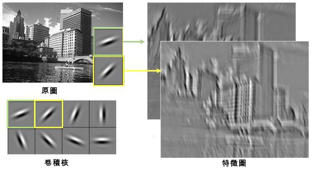
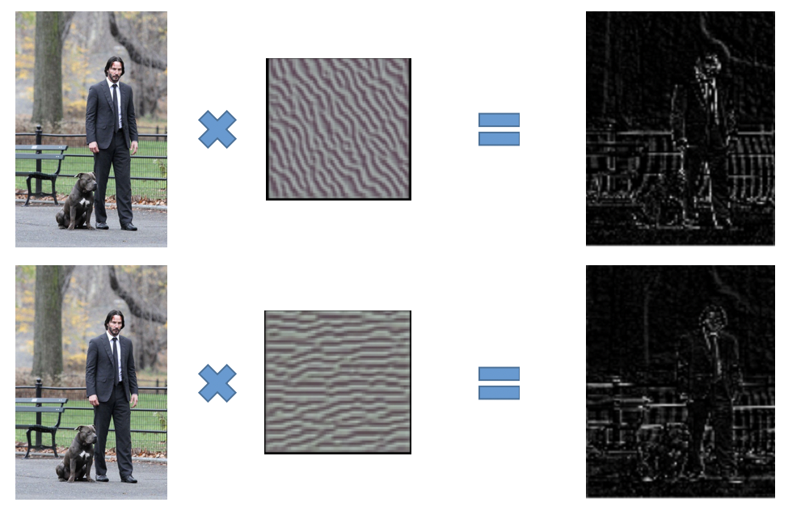
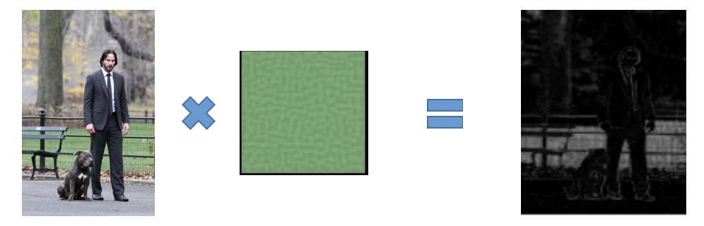
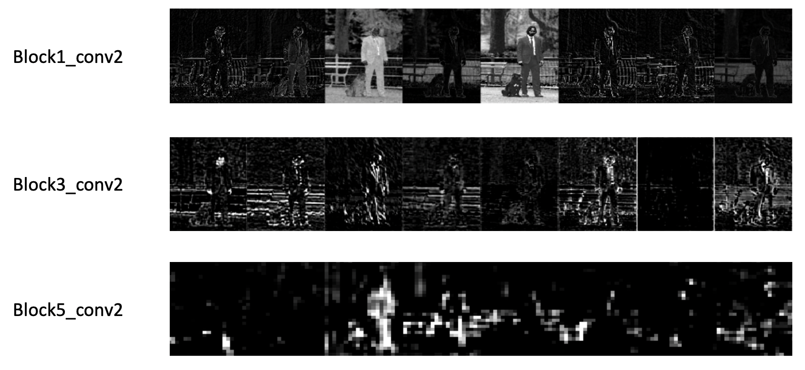

1. 特徵圖簡介
卷積神經網路在運算的過程中，每經過一次卷積層的運算都會產生出新的特徵圖。
以VGG19為例，一開始輸入的圖片會被縮放到長跟寬都等於224，而且因為有紅藍綠三個顏色的通道，所以總共的維度是224x224x3。而這個224x224x3的圖片在通過第一層的卷積層後，維度會變成224x224x64，也就是64張224x224的特徵圖。這是因為第一層的卷積層有64個卷積核，而每個卷積核都會學到一種特徵並輸出一張特徵圖。
透過視覺化這些特徵圖，我們可以大致了解到卷積神經網路學習了哪些不同的特徵。

2. 如何解讀特徵圖
這裡簡單說明一下，要如何透過這些特徵圖來看出卷積神經網路學到了哪些特徵。
卷積神經網路所學到的特徵，其實就是由卷積層中的各個卷積核所代表。透過觀察卷積層中，輸入圖片與輸出的特徵圖之間的差異，我們可以大概了解到該卷積核學到了什麼樣的特徵。
以VGG19的第一層卷積層為例，我們可以看看下圖的例子，從左到右分別是原圖、卷積核與輸出的特徵圖：

可以看到第一個卷積核學到的是類似斜線的特徵，而第二個則是水平線。因此在對應的兩張特徵圖中，第一個特徵圖在斜線的地方比較亮（值比較大），而第二個特徵圖在水平線的部分比較亮。
除此之外，卷積核也會學到和顏色相關的特徵：

在上面的例子，卷積核學到的特徵偏重綠色，因此所產生的特徵圖，也只有在綠色的部分會比較亮。
需要注意的是，這裡卷積核的圖片是為了方便理解，使用另一種視覺化方式來表現的。而真正的卷積核是一個3x3x3的矩陣。
3. 不同深度的特徵圖
在VGG19中，卷積層總共被分為五個區塊（block1~block5），而每個區塊的最後都會有池化層來壓縮圖片資訊。
經過池化的壓縮之後，特徵圖的維度也會跟著變小。也因此，越深層的特徵圖其維度（長跟寬）也會越小，不過相對的，特徵圖的每個值代表的特徵也越複雜。我們可以從下圖看到特徵圖從淺層到深層的變化：

我們可以看到，越深層的特徵圖視覺化看起來的結果會越模糊，光用肉眼也比較難看出特徵圖代表的特徵意義。也因此，本網站目前只用比較淺的卷積層來進行特徵圖的視覺化。如果想要了解比較深層的卷積層所學到的特徵，可以搭配卷積核視覺化的方法來觀察卷積核所學到的特徵；或者試試看另一種視覺化方法：反卷積。